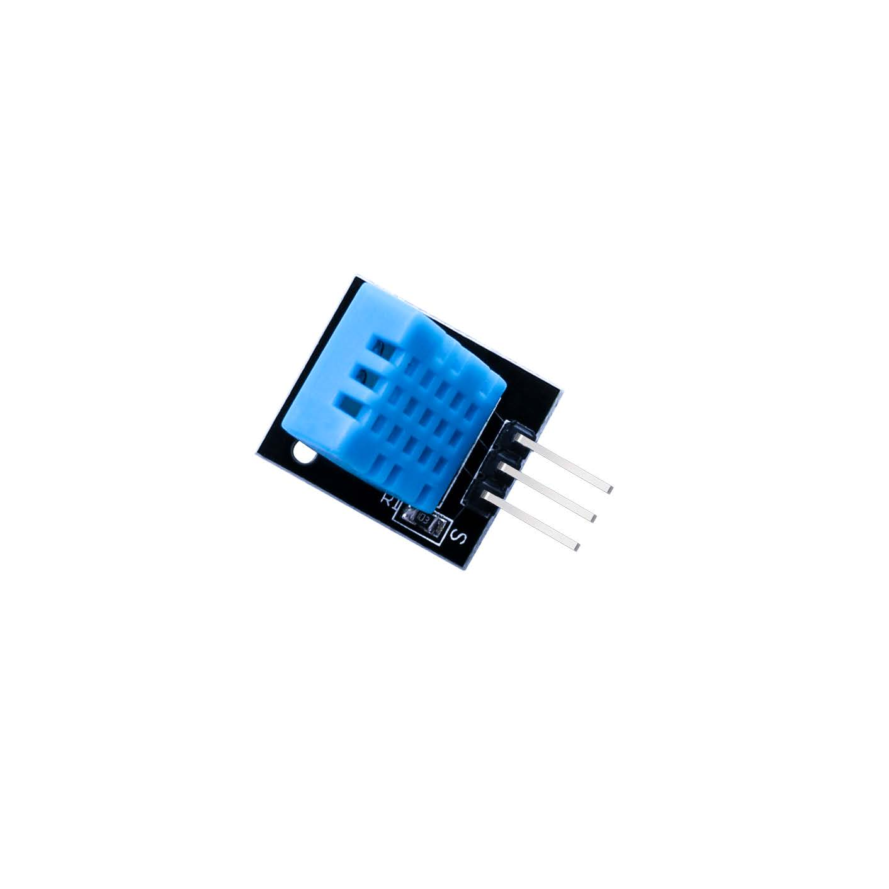
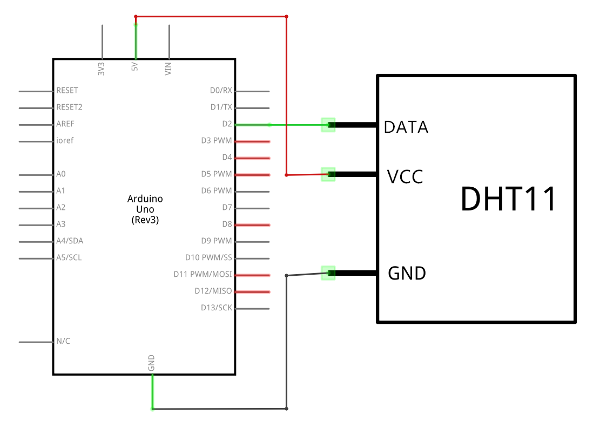
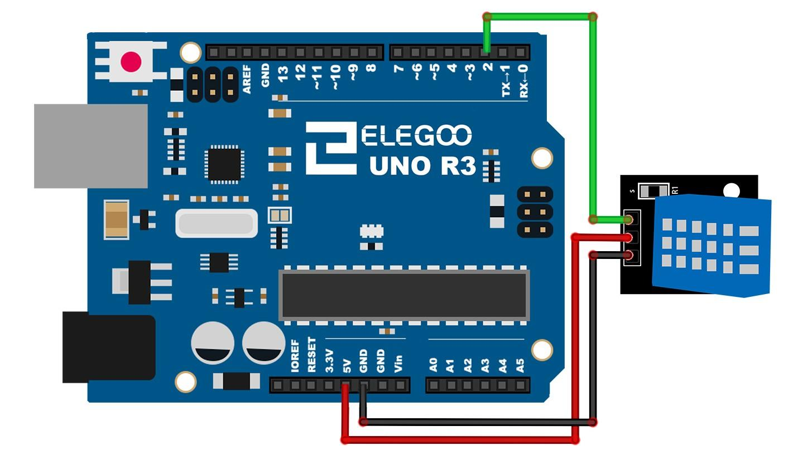
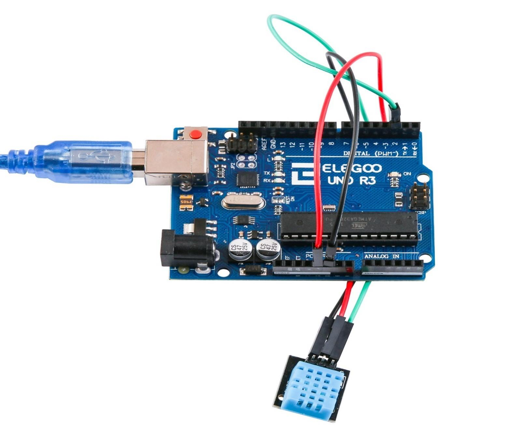
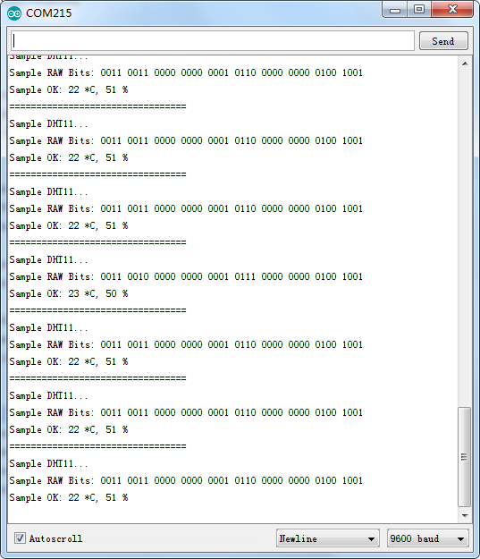

En este lección vamos a aprender cómo usar un Sensor de humedad y temperatura
DHT11. Este sensor Es lo suficientemente exacto para la mayoría de los proyectos que necesitan hacer
un seguimiento de las lecturas de humedad y temperatura.
Como en otras lecciones, vamos a usar una biblioteca diseñada específicamente para estos sensores
que harán que nuestro código corto y fácil de escribir.
(1) x Elegoo Uno R3
(1) x módulo de humedad y temperatura DHT11
(3) x F M cables (cables de hembra a macho)
El sensor digital de temperatura y humedad DHT11 es un sensor compuesto que da una salida digital calibrado de la temperatura y la humedad.
El sensor incluye un sensor resistente al agua y un dispositivo de medición de temperatura
NTC, ambos conectados a un microcontrolador de 8 bits de alto rendimiento.
Entre las aplicaciones mas comunes del sensor tenemos: HVAC, deshumidificador, bienes de
consumo, controles automáticos, automóviles, registradores de datos, estaciones
meteorológicas, electrodomésticos, regulador de humedad, etc.



Antes de ejecutar el script, nos aseguramos de que esta instalado el SimpleDHT de lo contrario, iremos a biblioteca para volver a instalarlo, si es necesario. El archivo lo descargaremos de aquí
Una vez efectuado todo el cableado, descargaremos el script del siguiente este link y lo cargaremos como hemos aprendido.

Vamos ahora a abrir al monitor, para ver los datos que se van recogiendo, para ello
hacemos click en el botón de Serial Monitor para encender el monitor serie.
Deberíamos tener algo como la siguiente imagen.

Volver al índice